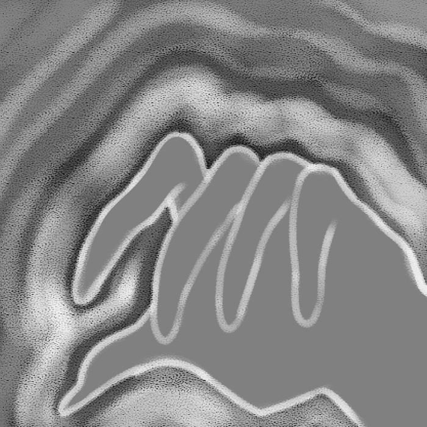

EXHALE
by
hinahina gray

Makemakani, when there is barely a stirring in the leaves of trees.
When the spirits walk closely beside us, the veil thin and easy to be passed through.
A time when the living are more likely to pass to the other side.
hope